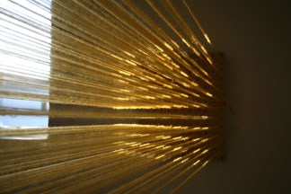
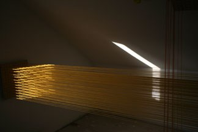
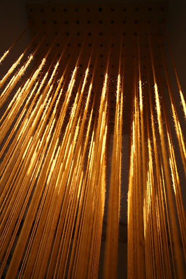
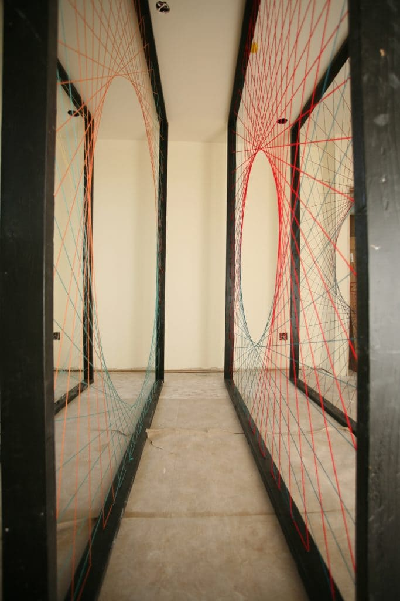
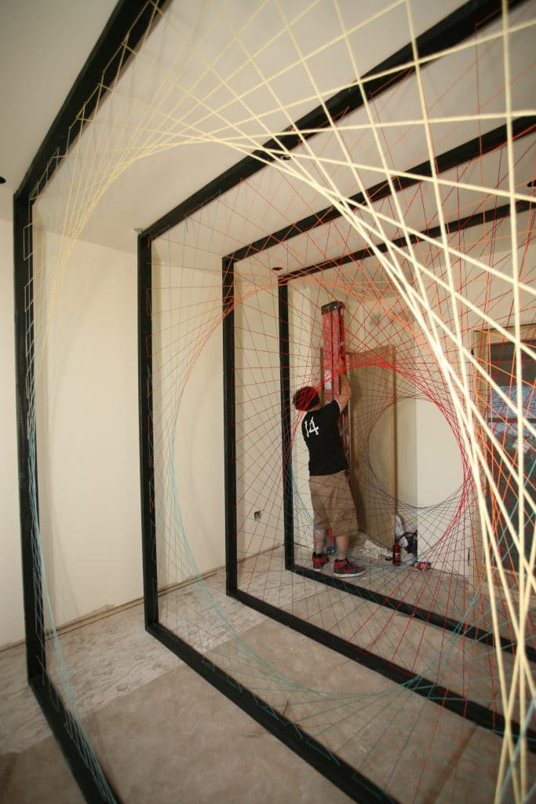
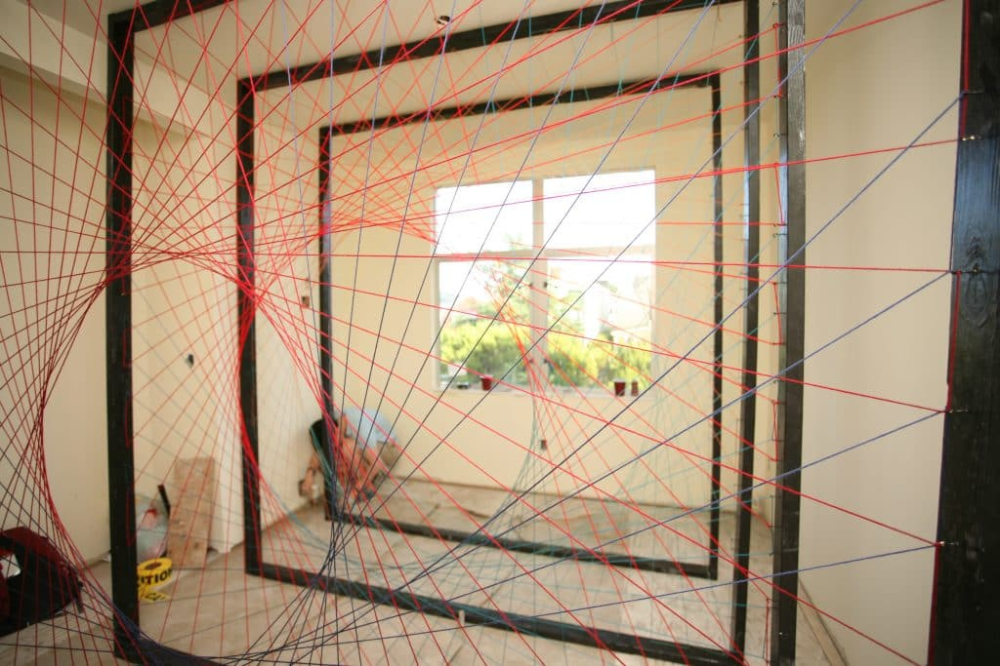

STRING FORMATIONS







Team 1
Kelsey Lange, Hannah Brown, Alex Landeros, Anran Li
Team 2
Adrian Harrison, Cody Leff, Guanlin Chen
STRING FORMATIONS, 2014
SAN FRANCISCO, CA
The final project for a course taught at Stanford University, which focused on light and color in architecture, site specific installations were installed at a project under construction in Noe Valley. Groups of students were asked to transform a space using colored string. Installations addressed the variable light conditions of each site, using string as the medium to capture light and redefine the spaces.
© 2023 BACH ARCHITECTURE. All rights reserved. | 3752 20th Street, San Francisco, CA 94110 | (415) 425-8582 | · info@bach-architecture.com